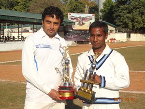
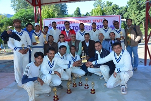
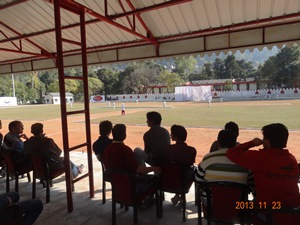
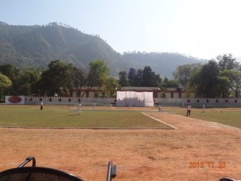
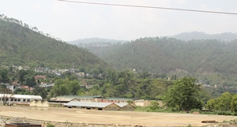
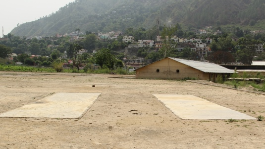

Facilities / Cricket
|
Institute has provided almost all the facilities related to cricket team.
Three Cemented pitches have been provided for net practice.
A sports assistant has also been appointed who maintains the flow of the team. The cricketers of NIT Uttarakhand
are very enthusiastic and new and innovative techniques are regularly used in training sessions.
The cricket team is looking forward to take part in more and more competitions in the future and win laurels for the Institute. |
|
|       | |